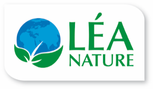

Sept. 2025 à août 2026

Léa Nature
Périgny · Alternante
Conception et mise à jour de supports de formation pour les équipes internes, sur les marques Eau Thermale Jonzac, Natessance et Bo-ho.
Support de formation
Outil de formation Eau Thermale Jonzac
En alternance chez Léa Nature, j'ai conçu les supports de formation destinés aux équipes et aux partenaires, pour trois marques du groupe : Eau Thermale Jonzac, Natessance et Bo-ho.
L'enjeu était de rendre une information scientifique dense immédiatement lisible, avec une navigation interactive et claire d'une section à l'autre, des chiffres clés mis en avant et des visuels qui soutiennent la démonstration plutôt que de la surcharger.
- Rôle
- Conception et mise en page
- Outils
- PowerPoint
- Photoshop
- Livrables
- Supports de formation interactifs